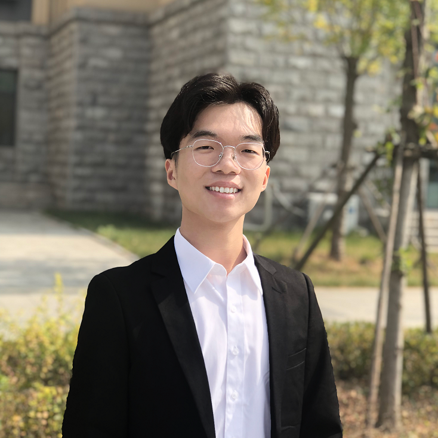

|  | Zongmeng Zhang （张宗萌）Master Student University of Science and Technology of China (USTC) Email: 929455154 AT qq dot com |
I am currently pursuing the Master's degree in University of Science and Technology of China (USTC) My supervisors are Prof. Houqiang Li and Prof. Wengang Zhou. I received my B.E. (Hons.) degree from Shandong University (SDU).
My research interests include computer vision and multimedia computing.